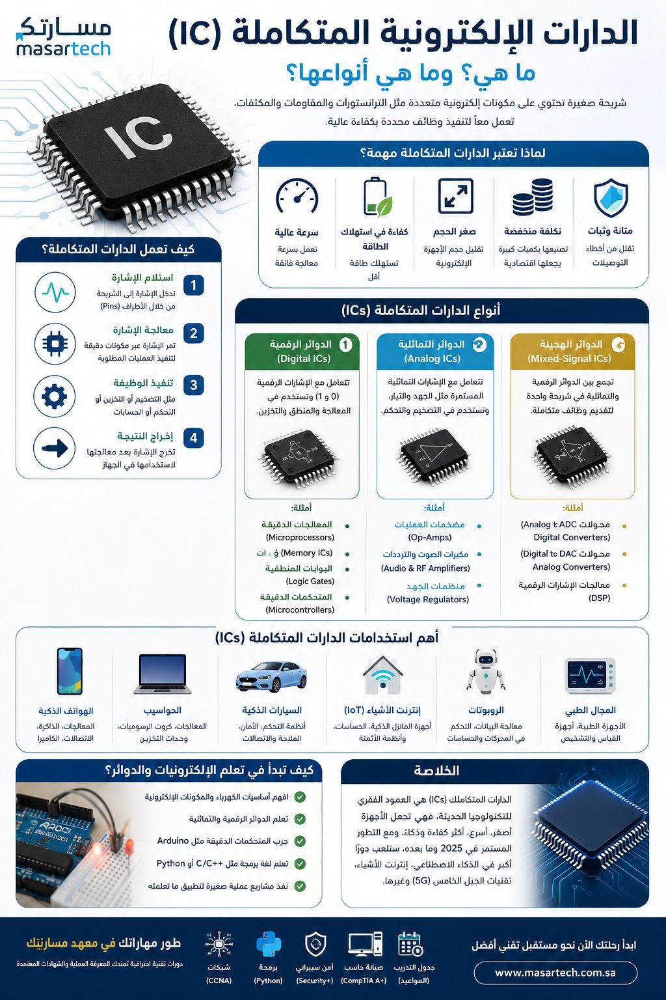

الدارات الإلكترونية المتكاملة IC (الاي سي): ما هي؟ وما أنواعها؟

مقال تدريبي من معهد مسار تك
تُعد الدارات الإلكترونية المتكاملة، أو ما يُعرف اختصارًا بـ الاي سي IC، من أهم الابتكارات التي غيرت شكل الإلكترونيات الحديثة، فهي الشريحة الصغيرة التي تجمع آلاف أو ملايين المكونات الدقيقة داخل قطعة واحدة، وتدخل اليوم في الهواتف (اي سي الجوال)، الحواسيب، السيارات، أجهزة التحكم، الروبوتات، وإنترنت الأشياء.
وقت القراءة: 11 دقيقة التصنيف: الإلكترونيات والتقنية مناسب للمبتدئين والطلاب
Integrated Circuits
شرائح صغيرة تجمع مكونات إلكترونية متعددة لتؤدي وظائف محددة بكفاءة عالية.
Digital & Analog
تنقسم الدارات المتكاملة إلى رقمية وتماثلية وهجينة حسب نوع الإشارة والوظيفة.
Modern Devices
تدخل ICs في الجوال والحواسيب والسيارات الذكية والروبوتات وأجهزة IoT.
الإجابة المختصرة: الدارة الإلكترونية المتكاملة IC (وتُنطق «اي سي») هي شريحة صغيرة من السيليكون تحتوي على مكونات إلكترونية دقيقة مثل الترانزستورات والمقاومات والمكثفات مركّبة معًا، وتستخدم لتنفيذ وظائف مثل المعالجة، التخزين، التحكم، التضخيم، وتحويل الإشارات. واختصار IC يعني Integrated Circuit أي «الدائرة المتكاملة».
محتويات المقال
- لماذا أحدثت الدارات المتكاملة ثورة في عالم التقنية؟
- حل أسئلة المنهج عن الدارات المتكاملة
- ما هو الاي سي IC؟ ومعنى اختصار IC
- كيف تعمل الدارات المتكاملة؟
- أنواع الدوائر المتكاملة IC
- شكل الاي سي ومما يُصنع؟
- ما هو الـ IC في الموبايل؟ (اي سي الجوال)
- أهم استخدامات الدوائر المتكاملة
- الأسئلة الشائعة
لماذا تعتبر الدارات المتكاملة مهمة؟
قبل ظهور الدارات الإلكترونية المتكاملة، كانت الدوائر الإلكترونية تُبنى من مكونات منفصلة تحتاج مساحة كبيرة وأسلاكًا كثيرة وتستهلك طاقة أعلى. لكن مع ظهور ICs أصبح من الممكن دمج عدد كبير من المكونات داخل شريحة واحدة صغيرة، مما ساعد على تصنيع أجهزة أصغر وأسرع وأكثر كفاءة.
ولهذا السبب تعتبر الدارات المتكاملة العمود الفقري للتكنولوجيا الحديثة؛ فهي موجودة داخل المعالجات والذاكرة والهواتف ولوحات التحكم وأجهزة الاستشعار وأنظمة السيارات والروبوتات والأنظمة الطبية.
فكرة بسيطة: إذا كان الجهاز الإلكتروني هو الجسم، فإن الدارات المتكاملة تشبه الدماغ والأعصاب التي تنظم الإشارات وتنفذ الأوامر داخله.
حجم أصغر
تجمع مكونات كثيرة في شريحة واحدة بدل الاعتماد على دوائر كبيرة ومتشعبة.
سرعة وكفاءة
تساعد الأجهزة على تنفيذ العمليات بسرعة أعلى واستهلاك طاقة أقل.
تكلفة أقل
تصنيع الشرائح بكميات كبيرة يجعل الأجهزة الإلكترونية أكثر انتشارًا واقتصادية.
لماذا أحدثت الدارات المتكاملة ثورة في عالم التقنية والإلكترونيات؟
الإجابة المباشرة: لقد أحدثت الدارات المتكاملة ثورة في عالم التقنية والإلكترونيات بسبب تنفيذها لمهام عديدة معقدة بسرعة هائلة جدًا. وقد ساعد دمج المكونات الإلكترونية داخل شريحة صغيرة أيضًا على تقليل الحجم والتكلفة وتحسين كفاءة الطاقة مقارنة بكثير من الدوائر التقليدية.
قبل الدارات المتكاملة كان الحاسوب الواحد يملأ غرفة كاملة. وعندما أصبح بالإمكان وضع آلاف ثم ملايين ثم مليارات الترانزستورات على شريحة واحدة، صار الجهاز أصغر وأسرع وأرخص في نفس الوقت، وهذا ما جعل الهواتف الذكية والحواسيب المحمولة ممكنة.
- السرعة: قرب المكونات من بعضها يقلل المسافة التي تقطعها الإشارة، فتُنفَّذ ملايين العمليات في الثانية.
- صغر الحجم: شريحة بحجم ظفر الإصبع تقوم بعمل كانت تحتاجه لوحات كاملة.
- التكلفة المنخفضة: تصنيع الشرائح بكميات ضخمة يخفض سعر القطعة الواحدة.
- كفاءة الطاقة والاعتمادية: يقل عدد التوصيلات الخارجية، وقد تتحسن كفاءة استهلاك الطاقة والاعتمادية مقارنة بالدوائر المنفصلة، وفقًا لتصميم الشريحة.
حل أسئلة المنهج عن الدارات المتكاملة
إليك إجابات مباشرة عن الأسئلة الدراسية الشائعة حول الدارات المتكاملة، مع تفسير مختصر يساعدك على فهم الإجابة بدل حفظها فقط.
السؤال 1: لقد أحدثت الدارات المتكاملة ثورة في عالم التقنية والإلكترونيات بسبب:
من الاختيارات الشائعة: احتوائها على ترانزستورات – تنفيذها لمهام عديدة معقدة بسرعة هائلة جدًا – كبر حجمها.
الإجابة الصحيحة: تنفيذها لمهام عديدة معقدة بسرعة هائلة جدًا.
لماذا؟ «كبر حجمها» إجابة خاطئة؛ فالتكامل الإلكتروني قلّل الحجم وسمح بتنفيذ وظائف أكثر بسرعة وكفاءة. واحتواء الشريحة على ترانزستورات جزء من طريقة عملها، لكنه لا يعبّر وحده عن الفائدة التي يسأل عنها السؤال.
السؤال 2: عند دمج عدة بوابات وإضافة المقاومات والمكثفات فإن المنتج الذي يشمل هذه العناصر يدعى باسم:
الخيارات: الذاكرة الرئيسة – وحدة التحكم – الدارة المتكاملة – البوابة المنطقية.
الإجابة الصحيحة: الدارة المتكاملة (IC).
لماذا؟ البوابة المنطقية هي جزء واحد فقط، أما دمج عدة بوابات معًا مع بعض العناصر الإلكترونية مثل المقاومات والمكثفات في شريحة واحدة فهو تعريف الدارة المتكاملة.
السؤال 3: مجموعة من العناصر الإلكترونية المتكاملة المركبة معًا تسمى:
الإجابة الصحيحة: الدارة المتكاملة (الدائرة المتكاملة IC).
السؤال 4: العنصر الإلكتروني الذي يعتمد في عمله على إشارة الجهد الداخل إليه يسمى:
الإجابة الصحيحة: الترانزستور.
لماذا؟ يمكن استخدام الترانزستور كمفتاح إلكتروني أو عنصر لتضخيم الإشارات؛ وفي الدوائر الرقمية تُستخدم حالاته لتمثيل القيم المنطقية 0 و1.
ما هو الاي سي IC؟ وما هي الدارة الإلكترونية المتكاملة؟
الدارة الإلكترونية المتكاملة، أو Integrated Circuit، وتُكتب أيضًا «الدائرة المتكاملة» أو «الايسي»، هي شريحة إلكترونية صغيرة غالبًا ما تُصنع من السيليكون، وتحتوي على مجموعة من العناصر الإلكترونية المتكاملة المركبة معًا لأداء وظيفة معينة.
قد تحتوي الشريحة على ترانزستورات، مقاومات، ثنائيات، مكثفات، وممرات توصيل دقيقة للغاية. وتختلف درجة تعقيد الشريحة حسب استخدامها؛ فبعض الشرائح تؤدي وظيفة بسيطة مثل تنظيم الجهد، بينما تحتوي شرائح أخرى مثل المعالجات على مليارات الترانزستورات.
معنى اختصار IC
اختصار IC هو الحرفان الأولان من Integrated Circuit، ومعناه بالعربية «الدائرة المتكاملة» أو «الدارة المتكاملة». ويُطلق عليها أيضًا Chip أو Microchip أي «الشريحة». أما عبارة «اي سي» أو «آي سي» المنتشرة في محلات صيانة الجوال فهي النطق العربي لنفس الاختصار.
| العنصر | دوره داخل الدارة المتكاملة |
|---|---|
| الترانزستورات | عنصر إلكتروني يعتمد في عمله على إشارة الجهد الداخل إليه، فيعمل كمفتاح إلكتروني أو عنصر تضخيم، وهو أساس المعالجات والدوائر الرقمية. |
| المقاومات | تساعد على التحكم في مرور التيار داخل الدائرة. |
| المكثفات | تستخدم في التخزين المؤقت للشحنة وترشيح الإشارات. |
| الثنائيات | تسمح بمرور التيار في اتجاه محدد وتستخدم في الحماية والتحكم. |
| مسارات التوصيل | تربط المكونات الدقيقة داخل الشريحة بطريقة منظمة لتنفيذ الوظيفة المطلوبة. |
الخلاصة: IC ليست مكونًا واحدًا فقط، بل نظام إلكتروني مصغر يجمع مكونات عديدة داخل شريحة صغيرة. وقد ظهرت أول دارة متكاملة عام 1958 على يد المهندس جاك كيلبي في شركة Texas Instruments، ثم طوّرها روبرت نويس بشريحة سيليكون عام 1959.
كيف تعمل الدارات المتكاملة؟ وما وظيفتها؟
وظيفة الدارة المتكاملة هي استقبال إشارات كهربائية ومعالجتها داخل الشريحة وفق تصميم محدد. قد تكون هذه الإشارات رقمية مثل 0 و1، أو تماثلية مثل تغير الجهد أو التيار بشكل مستمر.
استقبال الإشارة
تدخل الإشارة إلى الشريحة من خلال أطراف التوصيل Pins، سواء كانت إشارة رقمية أو تماثلية.
معالجة الإشارة داخليًا
تمر الإشارة عبر مكونات دقيقة مثل الترانزستورات والبوابات المنطقية أو دوائر التضخيم والترشيح.
تنفيذ الوظيفة المطلوبة
قد تكون الوظيفة حسابية، تخزينية، تحكمية، تضخيمية، أو تحويلًا بين الإشارات الرقمية والتماثلية.
إخراج النتيجة
تخرج الإشارة بعد معالجتها لتتحكم في جزء آخر من الجهاز مثل شاشة، حساس، محرك، ذاكرة، أو معالج.
أنواع الدوائر المتكاملة IC (أنواع الايسيهات)
يمكن تصنيف الدارات المتكاملة حسب نوع الإشارة والوظيفة إلى ثلاثة أنواع رئيسية: رقمية، تماثلية، وهجينة. فهم هذه الأنواع يساعدك على معرفة استخدام كل شريحة داخل الأجهزة الإلكترونية.
| النوع | طريقة العمل | أمثلة شائعة |
|---|---|---|
| Digital ICs | تتعامل مع الإشارات الرقمية 0 و1 وتستخدم في المنطق والحساب والتخزين. | المعالجات، الذاكرة، البوابات المنطقية، المتحكمات الدقيقة. |
| Analog ICs | تتعامل مع الإشارات التماثلية المستمرة مثل الجهد والتيار والصوت والتردد. | Op-Amps (مكبر العمليات)، مكبرات الصوت، منظمات الجهد، دوائر RF. |
| Mixed-Signal ICs | تجمع بين الدوائر الرقمية والتماثلية داخل نفس الشريحة. | ADC، DAC، وبعض شرائح الاتصالات التي تجمع معالجة رقمية ودوائر تماثلية. |
تصنيف الدوائر المتكاملة حسب درجة التكامل
تُصنَّف الشرائح أيضًا حسب عدد المكونات التي تحتويها، وكلما زاد العدد زادت قدرة الشريحة على تنفيذ مهام أعقد:
| المستوى | عدد المكونات تقريبًا | مثال |
|---|---|---|
| SSI | عشرات الترانزستورات | شرائح البوابات المنطقية البسيطة. |
| MSI | مئات الترانزستورات | العدادات والمسجلات ومفككات الترميز. |
| LSI | آلاف الترانزستورات | المعالجات الأولى وشرائح الذاكرة القديمة. |
| VLSI | أعداد كبيرة جدًا من الترانزستورات؛ وقد تضم الشرائح الحديثة مليارات منها. | معالجات الحواسيب والجوالات الحديثة. |
01
الدوائر الرقمية Digital ICs
تستخدم في المعالجات والذاكرة والبوابات المنطقية والمتحكمات الدقيقة مثل Arduino.
02
الدوائر التماثلية Analog ICs
مهمة في تضخيم الإشارات وتنظيم الجهد والتحكم في الصوت والترددات.
03
الدوائر الهجينة Mixed-Signal
تربط العالم الحقيقي التماثلي بالأنظمة الرقمية مثل الحساسات والتحكم الذكي.
أولًا: الدوائر الرقمية Digital ICs
الدوائر الرقمية هي الدارات التي تتعامل مع البيانات على شكل حالتين: 0 و1. وهي أساس الحواسيب والمعالجات والذاكرة والمتحكمات الدقيقة، لأنها تستطيع تنفيذ عمليات منطقية وحسابية بسرعة كبيرة.
| مثال | الاستخدام |
|---|---|
| Microprocessors | تنفيذ العمليات الحسابية والمنطقية داخل الحواسيب والهواتف والأنظمة الذكية. |
| Memory ICs | تخزين البيانات مؤقتًا أو دائمًا مثل DRAM وFlash Memory. |
| Logic Gates ICs | تنفيذ العمليات المنطقية مثل AND وOR وNOT داخل الدوائر الرقمية، ومن أشهرها شرائح عائلة 74xx مثل 7408 (AND) و7432 (OR) و7404 (NOT). |
| Microcontrollers | التحكم في الأجهزة والحساسات والمحركات، مثل ATmega وPIC وARM-based MCUs. |
مثال عملي: لوحة Arduino تعتمد على متحكم دقيق Microcontroller يمكنه قراءة إشارات من الحساسات والتحكم في لمبات أو محركات أو شاشات صغيرة.
ثانيًا: الدوائر التماثلية Analog ICs
الدوائر التماثلية تتعامل مع إشارات مستمرة مثل الصوت، الجهد، التيار، الحرارة، والضغط. لذلك تستخدم في الأنظمة التي تتعامل مع العالم الحقيقي، مثل أجهزة الصوت والحساسات وأنظمة الطاقة.
| مثال | الاستخدام |
|---|---|
| Operational Amplifiers (مكبر العمليات) | تضخيم الإشارات والتحكم بها داخل أجهزة القياس والصوت والحساسات. |
| Audio Amplifiers | تكبير الإشارات الصوتية داخل السماعات وأنظمة الصوت. |
| RF Amplifiers | تستخدم في الاتصالات اللاسلكية وإشارات الراديو والترددات العالية. |
| Voltage Regulators | تنظيم الجهد لتوفير تغذية ثابتة وآمنة للمكونات الإلكترونية. |
مثال عملي: منظم الجهد مثل 7805 يمكنه تحويل جهد أعلى إلى خرج ثابت 5V مناسب لتغذية دوائر إلكترونية معينة.
ثالثًا: الدوائر المتكاملة الهجينة Mixed-Signal ICs
الدوائر الهجينة تجمع بين العالمين: الإشارات الرقمية والإشارات التماثلية. وهي مهمة جدًا في الأجهزة الحديثة التي تحتاج إلى قراءة بيانات من العالم الحقيقي ثم معالجتها رقميًا.
| مثال | الاستخدام |
|---|---|
| ADC | تحويل الإشارات التماثلية القادمة من الحساسات إلى إشارات رقمية يفهمها المعالج. |
| DAC | تحويل الإشارات الرقمية إلى إشارات تماثلية، مثل إخراج الصوت أو التحكم في الجهد. |
| شرائح ترميز الصوت (Audio Codec) | قد تجمع محولات ADC وDAC مع دوائر رقمية لالتقاط الصوت وتشغيله. |
| Communication ICs | تستخدم في شرائح الاتصالات والبلوتوث والواي فاي وبعض أنظمة إنترنت الأشياء. |
مثال عملي: حساس الحرارة يعطي غالبًا إشارة تماثلية، ثم يحولها ADC إلى قيمة رقمية يستطيع المتحكم قراءتها ومعالجتها.
شكل الاي سي ومما تُصنع الدوائر المتكاملة؟
مما تصنع؟ تُصنع الدوائر الإلكترونية الصغيرة داخل الـ IC من رقاقة سيليكون نقية تُرسم عليها المكونات بطبقات مجهرية، ثم توضع الرقاقة داخل غلاف بلاستيكي أو سيراميكي يحميها، وتخرج منه أطراف معدنية للتوصيل.
ماذا يوجد داخلها؟ بداخل الغلاف توجد شريحة سيليكون صغيرة جدًا تضم ترانزستورات ومسارات توصيل، وقد تضم مقاومات ومكثفات حسب تصميمها. وتتصل الشريحة بأطراف الغلاف عبر أسلاك دقيقة أو وصلات أخرى بحسب تقنية التغليف.
شكل الـ IC: غالبًا قطعة سوداء مستطيلة أو مربعة، مكتوب عليها رقم القطعة، ويوجد عليها نقطة أو حز صغير يحدد الطرف رقم 1. ويختلف شكلها حسب نوع الغلاف:
| نوع الغلاف | الشكل | أين يستخدم؟ |
|---|---|---|
| DIP | أرجل طويلة على جانبين تُدخل في ثقوب اللوحة. | مشاريع الطلاب ولوحات التجارب Breadboard والأجهزة القديمة. |
| SOIC / SOP | أرجل قصيرة تُلحم على سطح اللوحة. | معظم الأجهزة الإلكترونية الحديثة. |
| QFP / QFN | شريحة مربعة بأطراف على الجوانب الأربعة أو أسفلها. | المتحكمات الدقيقة ولوحات التحكم. |
| BGA | كرات لحام صغيرة أسفل الشريحة بدل الأرجل. | معالجات وذاكرة واي سيهات الجوال والحواسيب. |
ما هو الـ IC في الموبايل؟ (اي سي الجوال)
عندما يقول فني الصيانة إن «الاي سي تالف» في الجوال، فهو يقصد إحدى الشرائح المتكاملة على اللوحة الأم للهاتف. الهاتف الواحد يحتوي على عدد من الـ ICs، لكل واحدة وظيفة محددة، ومن أشهرها:
| نوع الاي سي في الجوال | وظيفته | علامات تلفه الشائعة |
|---|---|---|
| اي سي الباور Power IC / PMIC | إدارة وتوزيع الطاقة على أجزاء الهاتف المختلفة. | قد تظهر مشكلات تشغيل أو إعادة تشغيل، لكنها ليست دليلًا قاطعًا على تلف الشريحة. |
| اي سي الشحن Charging IC | التحكم في عملية شحن البطارية وحمايتها. | قد تظهر مشكلات شحن؛ وقد يكون السبب أيضًا البطارية أو المنفذ أو الشاحن. |
| اي سي الشبكة Baseband / RF IC | استقبال وإرسال إشارات شبكة الاتصال. | لا توجد شبكة أو ضعف دائم في الإشارة. |
| اي سي الصوت Audio IC | معالجة الصوت للسماعة والمايك. | انقطاع الصوت أو المايك أثناء المكالمات. |
| اي سي الشاشة واللمس | التحكم في الإضاءة الخلفية واستجابة اللمس. | شاشة مظلمة أو لمس لا يستجيب. |
| اي سي الواي فاي والبلوتوث | الاتصال اللاسلكي بالشبكات والأجهزة. | زر الواي فاي معطل أو البلوتوث لا يعمل. |
ملاحظة مهمة: لا يمكن الجزم بتلف أي سي الجوال من الأعراض وحدها؛ فالأعطال قد ترتبط بالبطارية أو الشاحن أو أجزاء أخرى. ويحتاج تشخيص أعطال اللوحة الأم إلى فني مؤهل. وإذا كان هذا المجال يهمك، فـ دورة CompTIA A+ مدخل لفهم مكونات الأجهزة وأساسيات تشخيص الأعطال.
أهم استخدامات الدوائر المتكاملة IC
تستخدم الدوائر الإلكترونية IC في كل جهاز إلكتروني حديث تقريبًا. كلما كان الجهاز ذكيًا أو قابلًا للبرمجة أو متصلًا بالإنترنت، زادت احتمالية اعتماده على أكثر من نوع من أنواع ICs.
الهواتف الذكية
المعالجات، الذاكرة، الكاميرا، الاتصال، إدارة الطاقة، الشحن، ومستشعرات الهاتف.
الحواسيب
المعالجات المركزية، كروت الرسوم، ذاكرة التخزين، ووحدات التحكم.
السيارات الذكية
أنظمة التحكم، الحساسات، الأمان، الملاحة، وإدارة الطاقة داخل المركبة.
إنترنت الأشياء IoT والأجهزة المنزلية
أجهزة المنازل الذكية، الغسالات والمكيفات، الحساسات، وحدات الاتصال، والتحكم عن بُعد.
الروبوتات
قراءة الحساسات، التحكم في المحركات، معالجة البيانات، واتخاذ القرارات.
الأجهزة الطبية
أجهزة القياس، التصوير، المراقبة، والتحكم الدقيق في الأنظمة الطبية.
مزايا الدوائر المتكاملة وفوائدها
انتشار ICs لم يكن صدفة؛ فهي تقدم مزايا كبيرة مقارنة بالدوائر التي تعتمد على مكونات منفصلة كثيرة. هذه المزايا جعلتها أساس الإلكترونيات الحديثة.
صغر الحجم
تجعل الأجهزة أصغر وأسهل في الحمل والتصميم.
استهلاك طاقة أقل
تعمل بكفاءة أعلى، وهو أمر مهم للهواتف والأجهزة المحمولة.
سرعة أعلى
قرب المكونات من بعضها يقلل زمن انتقال الإشارة.
اعتمادية أكبر
تقلل مشاكل الأسلاك والتوصيلات التقليدية.
تكلفة اقتصادية
التصنيع بكميات كبيرة يخفض تكلفة الأجهزة الإلكترونية.
إمكانيات ذكية
تسمح ببناء أجهزة أكثر قدرة على المعالجة والتحكم والتواصل.
دورات ومسارات تساعدك بعد فهم الدوائر المتكاملة
إذا أعجبك مجال الإلكترونيات والدوائر والأنظمة الذكية، فهذه المسارات تساعدك على الانتقال من الفهم النظري إلى المهارات العملية المطلوبة في سوق العمل.
دورة CompTIA A+ مناسبة لفهم مكونات الحاسب والهاردوير والصيانة كأساس تقني قوي.
دورة Python مفيدة لمن يريد برمجة الأنظمة الذكية، الأتمتة، وتحليل بيانات الحساسات.
دورة CCNA تساعدك على فهم الشبكات التي تعتمد عليها أجهزة IoT والأنظمة المتصلة.
دورة Security+ مهمة لفهم حماية الأجهزة المتصلة والأنظمة الذكية من المخاطر الأمنية.
دورة Power BI مناسبة لعرض وتحليل البيانات الناتجة من الأجهزة والحساسات والأنظمة الذكية.
جدول التدريب تعرف على مواعيد الدورات التقنية القادمة في معهد مسار تك.
كيف تبدأ في تعلم الدوائر الإلكترونية من الصفر؟
إذا كنت مبتدئًا، لا تبدأ مباشرة بالشرائح المعقدة. الأفضل أن تبني أساسًا تدريجيًا يبدأ بالدوائر الإلكترونية البسيطة ثم ينتقل إلى الدوائر الرقمية والمتحكمات والبرمجة.
افهم المكونات الأساسية
ابدأ بالمقاومات، المكثفات، الثنائيات، الترانزستورات، وكيفية قراءة الدوائر البسيطة.
تعلم أساسيات الكهرباء
افهم الجهد والتيار والمقاومة والقدرة، لأنها أساس التعامل مع أي دائرة إلكترونية.
تعرف على الدوائر الرقمية
تعلم البوابات المنطقية، الأنظمة الثنائية، والفرق بين الإشارات الرقمية والتماثلية.
جرّب المتحكمات الدقيقة
استخدم Arduino أو لوحات مشابهة لفهم كيف تتحول الإشارات إلى أوامر عملية.
ادخل عالم البرمجة
تعلم Python أو C/C++ حسب نوع المشاريع التي تريد تنفيذها في الإلكترونيات والأنظمة الذكية.
نفذ مشروعًا صغيرًا
ابدأ بمشروع بسيط مثل قراءة حساس حرارة أو تشغيل LED أو التحكم في محرك صغير.
ابدأ من الأساس… ثم انتقل للأنظمة الذكية
فهم الدوائر المتكاملة يمنحك نظرة أعمق لطريقة عمل الأجهزة الحديثة، ويساعدك على دخول مسارات مثل الإلكترونيات، صيانة الأجهزة، إنترنت الأشياء، الروبوتات، البرمجة، والأمن السيبراني للأجهزة المتصلة.
الأسئلة الشائعة
ما هو الاي سي IC؟
الاي سي IC هو الدارة الإلكترونية المتكاملة: شريحة صغيرة من السيليكون تحتوي على مكونات دقيقة مثل الترانزستورات والمقاومات والمكثفات، وتستخدم لتنفيذ وظائف مثل المعالجة أو التخزين أو التحكم أو التضخيم.
ما معنى اختصار IC؟
IC اختصار لعبارة Integrated Circuit، ومعناها الدائرة المتكاملة أو الدارة المتكاملة، وتسمى أيضًا Chip أي الشريحة.
لقد أحدثت الدارات المتكاملة ثورة في عالم التقنية والإلكترونيات بسبب؟
بسبب تنفيذها لمهام عديدة معقدة بسرعة هائلة جدًا، مع صغر حجمها وانخفاض تكلفتها واستهلاكها القليل للطاقة.
عند دمج عدة بوابات وإضافة المقاومات والمكثفات فإن المنتج يدعى باسم؟
يدعى الدارة المتكاملة (IC)، لأنها تجمع عدة بوابات منطقية وعناصر إلكترونية في شريحة واحدة.
ما هو الـ IC في الموبايل؟
هو إحدى الشرائح المتكاملة على اللوحة الأم للجوال، مثل اي سي الباور لإدارة الطاقة، واي سي الشحن، واي سي الشبكة، واي سي الصوت، ولكل منها وظيفة محددة.
ما أنواع الدوائر المتكاملة؟
أشهر الأنواع هي الدوائر الرقمية Digital ICs، والدوائر التماثلية Analog ICs، والدوائر الهجينة Mixed-Signal ICs التي تجمع بين النوعين. وتصنف أيضًا حسب درجة التكامل إلى SSI وMSI وLSI وVLSI.
مما تصنع الدوائر الإلكترونية المتكاملة؟
تصنع من رقاقة سيليكون تُرسم عليها المكونات بطبقات مجهرية، ثم توضع داخل غلاف بلاستيكي أو سيراميكي بأطراف معدنية للتوصيل.
ما الفرق بين IC والدوائر الإلكترونية التقليدية؟
الدوائر التقليدية تعتمد على مكونات منفصلة متصلة بأسلاك أو لوحة مطبوعة، بينما IC تجمع عددًا كبيرًا من هذه المكونات داخل شريحة صغيرة واحدة.
هل المعالج CPU يعتبر دارة متكاملة؟
نعم، المعالج هو نوع متقدم جدًا من الدوائر المتكاملة الرقمية، ويحتوي على عدد ضخم من الترانزستورات التي تنفذ العمليات الحسابية والمنطقية.
هل Arduino يحتوي على IC؟
نعم، لوحات Arduino تحتوي على متحكم دقيق Microcontroller وهو نوع من الدوائر المتكاملة يستخدم للتحكم في الحساسات والمخارج الإلكترونية.
ما أفضل طريقة لتعلم الدوائر المتكاملة للمبتدئين؟
ابدأ بفهم أساسيات الكهرباء والمكونات الإلكترونية، ثم تعلم الدوائر الرقمية والتماثلية، وبعدها جرّب مشاريع بسيطة باستخدام Arduino أو متحكمات دقيقة مشابهة.